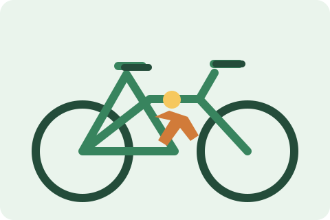
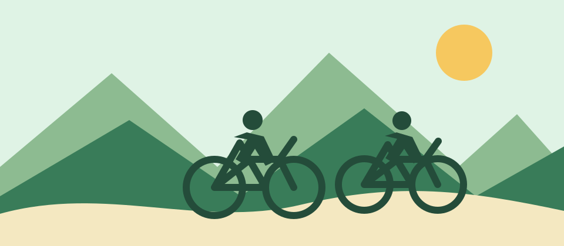
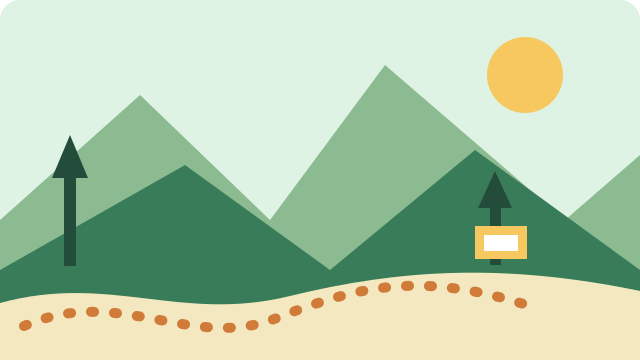

Alquiler de bicicletas

Elige una bicicleta para recorrer Medellín a tu ritmo. El alquiler incluye casco y candado para que disfrutes tu paseo con mayor tranquilidad; pedalear por la ciudad puede ser el mejor plan del día.

Bienvenido a Rueda Libre: descubre Medellín sobre dos ruedas y encuentra cómo visitarnos.
Somos un servicio local de alquiler de bicicletas que invita a residentes y visitantes a conocer Medellín de una manera activa y sostenible. Queremos que cada recorrido sea cómodo, seguro y lleno de buenos momentos.

Elige una bicicleta para recorrer Medellín a tu ritmo. El alquiler incluye casco y candado para que disfrutes tu paseo con mayor tranquilidad; pedalear por la ciudad puede ser el mejor plan del día.

Explora parques, barrios y paisajes de la ciudad con un guía. Consulta los recorridos guiados y sus precios.
Organiza una salida con amigos o familia y consulta la disponibilidad de bicicletas para tu grupo. Compartir el recorrido hace que la experiencia sea aún más especial.
Estamos en Medellín, Colombia. Consulta Medellín en el mapa y contáctanos para coordinar el punto de entrega.
Escríbenos a hola@ruedalibre.example.